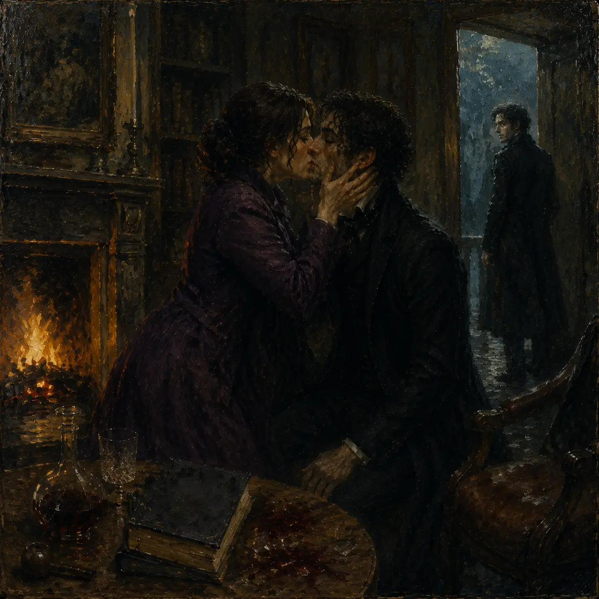

فروخُفتگی
قسمت ۱۹
هانس روی صندلی نشسته بود و گاهی نگاهی نگران به جان میانداخت. شعلههای شومینه در حال رقصیدن بودند و سایههایشان بر دیوار، طرحهای لرزانی ایجاد میکرد. جان اما ساکت بود و به نقطهای نامعلوم خیره شده بود. هانس سکوت را شکست و آرام گفت:«خب احساسات اگر برای بروز دادن هست، پس چرا میشه که بعضی وقتا ما این احساسات رو مخفی میکنیم و بعد میایم اون رو در شکلهای دیگه نمایشش میدیم؟ غیرمنطقی نیستی جان؟» جان از آن چهرهی متفکرش فاصله گرفت و نیمنگاهی به هانس انداخت. لبخند محوی بر لبش نشست، اما در عمق چشمانش میشد سایههای سنگین اندوه را دید. «غیرمنطقی؟» صدایش آرام و کشدار بود، گویی هر کلمه از میان دود پیپ عبور میکرد. «هانس، منطقیترین کار همین پنهان کردن احساساته. چون احساسات مثل تیغ دولبهان. وقتی نشونشون میدی، انگار یه شمشیر رو به سمت قلب خودت گرفتی و دستهش رو دو دستی به نفر مقابل دادی.»
او پک عمیقی به پیپش زد و دود را به سمت سقف فرستاد. «اما اگه بتونی این احساسات رو بپیچی لای چیزی که دیگران انتظارش رو ندارن... یه لبخند، یه شوخی مسخره، یا حتی یه بحث بیاهمیت... اونوقته که دستت رو رو نکردی. اونوقته که هنوز شمشیر تو دستای خودته.» هانس مکثی کرد. میخواست چیزی بگوید، ولی جان نگاهش را به شومینه دوخت و شعلهها را نظاره کرد. هانس بالاخره آرام گفت:«آخه جان... ببین اگه شارلوت تو رو دوست داره، تو چرا نمییای احساساتت رو بهش بگی؟ تهش بگو که نمیخوایش. چرا انقدر هم خودت و هم اون رو داری تو برزخ میذاری؟ ببین من خودم با ایمی در رابطه هستم. گاهی وقتا میشه که میبینم احساساتم جریحهدار میشه اما...» جان یکهو گلویش را صاف کرد. صدای خشنی از میان لبهایش بیرون آمد:«هانس... بس کن! تو هیچی نمیفهمی. فکر میکنی این یه نمایش مضحکه؟ اینکه من و شارلوت اینجا، بین این دیوارها، مثل دو سایه در یک اتاق تاریک گیر افتادیم؟» او چند قدم به سمت پنجره رفت و نگاهش را از میان شیشه به بیرون دوخت. نور مهتاب روی صورت خستهاش تابید.
«من میدونم که شارلوت دوستم داره. اما مشکل اینه که من اون آدمی نیستم که شارلوت فکر میکنه. یه خرابکارم. یه کسی که بیشتر از اینکه بسازه، خراب میکنه.» هانس لبهایش را جمع کرد که دوباره حرفی بزند، اما جان دستانش را بالا آورد و مانع شد. «نه، نمیخوام چیزی بشنوم. تهش میخوای بگی باید شجاع باشم، باید بهش اعتراف کنم؟ اگه وارد این رابطه بشم، هر قدمم با ترس خواهد بود، ترس از اینکه یه روز بفهمه من چقدر درونم خالیه. نه هانس، من نمیتونم.»
او به سمت شومینه برگشت و خاکستر پیپش را خالی کرد. صدای ضعیف برخورد خاکستر با لبهی سنگی شومینه، به طرزی سنگین در گوش هانس طنین انداخت. «بعضی آدمها ساخته نشدن برای دوست داشته شدن، هانس. بعضیها... فقط برای تماشا کردن از دور ساخته شدن.» هانس خواست اعتراض کند که ناگهان صدای زنگ در بلند شد. جان نگران به نظر رسید. ابروهایش در هم رفت و نگاه سریعی به هانس انداخت:«کسی قرار بود بیاد؟» هانس با لبخندی شیطنتآمیز گفت: «آره... عامل پنهون بودن احساساتت.» بعد از جایش بلند شد و به سمت در رفت. صدای قدمهایش در سکوت اتاق بلند بود. جان هنوز کنجکاو و مضطرب به نظر میرسید. وقتی هانس در را باز کرد، صدای کفشهای پاشنهدار و صدای زنی که آرام «سلام، هانس» گفت، توجه جان را جلب کرد. نگاهش به سمت در حرکت کرد. نور چراغ ورودی روی چهرهی زنی افتاد که بارانی ارغوانی به تن داشت. دانههای باران روی سرش میدرخشید و موهایش کمی آشفته بهنظر میرسیدند، اما در عین حال مرتب و جذاب. آشنا بود. صدای او در خانه پیچید:
«سلام، جان.»
جان دیگر آرام و قرار نداشت. بیحرکت کنار شومینه ایستاده بود و چیزی در نگاهش میدرخشید؛ ترسی شیرین یا لرزشی عمیق. هانس با نگاهی به این دو نفر گفت: «خب، من فکر میکنم شما دوتا حرفهای زیادی برای گفتن دارید...» و به سمت آشپزخانه رفت. شارلوت با احتیاط بارانیاش را درآورد و نزدیک شد. «جان... ما باید حرف بزنیم.»
جان کلمهای نگفت. فقط ایستاده بود، اما چشمانش پر از احساسات گرهخوردهای بود که به راحتی بیان نمیشد. هانس از آشپزخانه برگشت و لبخندی به شارلوت زد: «ببین من این جان رو شاید از دورانی که خودم رو شناختم، میشناسم. نبین که آدمیه که همیشه آرومه...» جان ناگهان گلویش را صاف کرد و چشمغرهای به هانس رفت. هانس دستانش را به کمر گرفت و با اخمی ساختگی گفت: «اوه ببخشید آقا بزرگه... این آقا بزرگ زیاد دوست نداره دربارهی گذشتهش فکر کنه.» شارلوت تکهخندهای زد و به جان نزدیکتر شد. هانس سری تکان داد و به سمت در خروجی قدم برداشت. «من میرم بیرون یه هوایی بخورم. اصلاً میخوام برم شاعرانه به آسمون نگاه کنم. شما دوتا رو تنها میذارم.»
دقایقی در سکوت گذشت. صدای هانس که از خانه بیرون میرفت و در آرام بسته شد، سکوت را عمیقتر کرد. شارلوت اندکی خم شد، نگاهش را به جان دوخت و از او پرسید: «جان... چرا همیشه اجازه میدی دیوارها حرف بزنن، اما خودت نه؟» جان میخواست لب بگشاید، اما چیزی نگفت. انگار کلمات هنوز اختراع نشده بودند. در همین سکوت، شارلوت چند قدم به او نزدیکتر شد. جان حواسش به او نبود، غرق در شعلههای رقصان آتش مانده بود؛ گویی رمز و رازی در آن جستوجو میکرد که پاسخ تمام پرسشهایش را در خود دارد. شارلوت آهی کشید. بهآرامی کنارش نشست. «من نمیدونم توی سرت چه میگذره، جان. ولی مطمئنم که هرچی هست، این تو رو داره از درون میخوره. فکر میکنم تو نیاز داری گاهی... یه کم نفس بکشی. بدون فکر به اینکه دیگران چه انتظاری ازت دارن.» جان لحظهای به او نگاه کرد. چشمهایش خسته بودند، اما در عین حال اندکی امید هم در آنها موج میزد. خواست چیزی بگوید که شارلوت دست ظریفش را به سمت صورت جان برد. انگشتانش را روی گونههای او گذاشت، و سر او را به سمت خودش چرخاند. ناگهان شارلوت دستان ظریفش را بر صورت جان گرفت. صورتش را به سوی خود برگرداند و خودش را نزدیک کرد. ثانیهها متوقف شدند. قطرات باران از دم ایستادند و موجودات دیگر هم نفسی بیرون نمیدادند، تا این دو بدون حواسپرتی از هم لذت ببرند. بوسهای آرام و نرم بر لبهای جان نشست؛ مثل نسیمی ملایم در دل طوفان. لحظهای که تمام احساسات فروخورده و ناگفتههای جان را آزاد کرد.
بوسهای که سدی را در پشت دریچههای قلب جان شکست.
جهان برای چند ثانیه در سکوتی جادویی فرورفت. وقتی بالاخره جان سرش را کمی عقب برد، قطرات اشک در چشمانش برق میزدند. تردیدها و ترسها هنوز در عمق نگاهش دیده میشد، اما شبیه کسی بود که تازه فهمیده انتخابی دارد؛ انتخابی برای دوست داشتن یا برای تسلیم نشدن. بار دیگر صدای زنگ در خانه پیچید. شارلوت و جان به هم نگاهی انداختند. تردیدی لحظهای در چشمهای جان نشست، اما شارلوت لبخندی خفیف زد و آرام گفت: «فکر میکنم این تصمیم رو باید همین حالا بگیری، جان.» جان نگاهش را به شعلههای شومینه دوخت، انگار که در اعماق آتش دنبال جوابی بگردد. نور شومینه بار دیگر بر چهرهی آن دو افتاد، سایهای نرم بر دیوارها رسم کرد و ناگهان همهچیز در تاریکی محو شد. تنها صدای باران بود که بهآرامی ادامه یافت...
پایان؟
یا شاید... مکثی پیش از شروعی تازه.